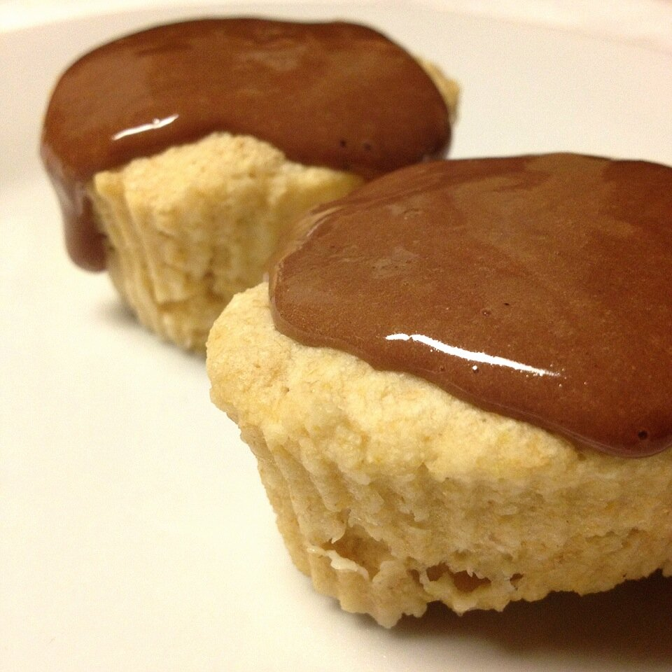

1-Minute Cupcake
A month or so ago I bought pastry flour for a recipe. I used it once, but didn't touch it since. I've been playing around with it lately and came up with theeeeee perfect cupcake recipe. I've never seen a more perfect texture. So light and airy! I strongly strongly urge you to purchase this flour. It's only $4-5 for a pound so you have no excuse :D

1-Minute CupcakeMakes: 2 cupcakes (1 serving)
- 2 TBSP organic whole wheat pastry flour (15g)*
- 1 TBSP coconut flour
- 1 egg white
- 1 TBSP unsweetened almond milk
- 1 tsp vanilla extract
- 1/2 tsp baking powder
- 1-2 stevia packets
Mix all of the ingredients. Place into two silicon cupcake molds sprayed with a nonstick spray. Microwave for a minute. Enjoy :) You can also just pour all of the batter into one mug or bowl and microwave for a minute to make a large mugcake.I topped mine with a rocky road protein icing made by mixing 1 TBSP plain greek yogurt, 1/2 scoop rocky road whey protein, and 7 stevia drops.
Nutrition info for full recipe (with no icing): 110 calories; 2g fat, 16g carbs (5g fiber), 7g protein.*If you don't have whole wheat pastry flour, you can substitute it with an additional tablespoon of coconut flour. But like I said, it's just not the same. I urge you to purchase the pastry flour, which can be bought on iherb.com. Additionally, you can use the discount code GIK407 at checkout for up to $10 off your order.